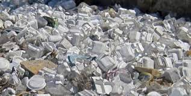
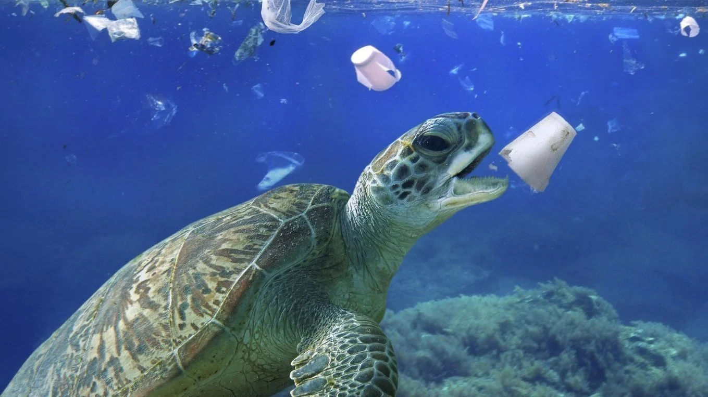
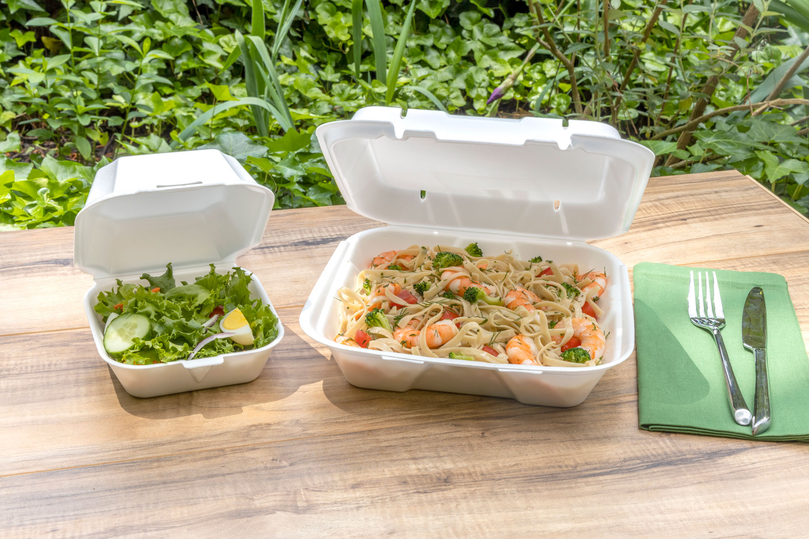

Pros and cons of styrofoam
Pros
The only major pro of styrofoam is that it is cheap and an easy one use item of consumers.
Cons
Decomposition
Although styrofoam does have methods of being recycled it is common for companies to not use these methods since the few that have operate at a loss. Recycling styrofoam is very difficult because once they have been used for foods and drinks it makes it close to impossible to clean and reuse the materials. This is why most local agencies will require that users throw styrofoam in the garbage rather than recycle it since it is too costly for the company. Photodegradation is the main mode of decomposition, this is because styrofoam is sensitive to sunlight. Over years of continuous exposure, the outer layers of the plastic will eventually turn into a powdery substance. In addition to this, there is something called leaching, this is when the polystyrene is warmed tiny amounts of styrene can seep out and contaminate anything in the package.
Enviornmental risks
Polystyrene is a nonbiodegradable plastic meaning when thrown away it will remain in the environment for thousands of years. It has been found in waters and winds and is very harmful to animal life because small pieces can obstruct their airflow. Every styrofoam cup produces about 0.07229 pounds of CO2 when scaled up to a larger scale can be a great cause of global warming.
Health Risks
There are also a lot of health concerns including irritation, nervous system impairments, hormone disruption, and cancer risk . The main cause of these symptoms is that the food and drinks may be contaminated by the styrofoam, this is because of leaching. In 1991, the Agricultural Experiment Station reported that they spotted styrene monomers in eggshells after being stored in polystyrene containers. There was also a discovery made of styrofoam cups losing weight while being used meaning styrene is being ingested by consumers.
